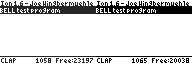

Writing a simple game
Okay, maybe it's not really a game, but you should keep in mind that I'm not a game programmer. I don't know much about efficient tilemapping and the lot, but I do know how to put a sprite on the screen and move it around using the arrow keys ;-) This little "game" will enable two players to move their own sprite and watch the other's sprite move as well:
First I'll initiate some variables for the player's positions. Notice how they follow the same order and are grouped per player.
This is our "model" of the game, in it's most low-level form. Next, we're going to try to connect the calculators. Notice I use the API for outputting to the display; otherwise the demo will be less readable and much longer :-).
Okay, we've got a connection! Otherwise, we would have jumped to connect_error, which you can find at the bottom of the program. Now we move on to the main program loop.
As you can see, we just check for keypresses on the local calculator and update our model if we've tried to move our own sprite. Then we reload the part of our model that the other calculator is responsible for, and we call the routine that knows what to display depending on the model. As I said; I don't know much about game programming, but I'd say this seems the "proper" way to do it.
Next up; check if a key was pressed, and if so; update the model or quit the program.
That was pretty simple, right? I could have used the API a bit more for that, but it's readable enough to anyone who's ever read keys from the port before. Now comes the interesting part, the swapping of data, and because Bell makes it so damned simple it's kinda disappointing:
"Is that all?!" - I hear you ask. Yes, that's all. We tell Bell to swap two bytes (in b), we want to send our own coordinates (my_x in hl) and overwrite the other player's coordinates with what we receive (his_x in de). It's almost as simple as ldir :-). This will update the model on both calculators with the coordinates from their opponents. So if the other player has moved, our model gets updated with his new coordinates, and our drawing routine will show him in the right spot. If the transfer screws up (you've pulled out the cable or the other player quits the program for example) we jump to error.
The next routine is pretty boring too, but it's got to be done:
Okay, we're pretty much done now. Only a few more things to do: first we need a few error routines that give a nice error to the user when something goes wrong.
I re-enable interrupts before calling Ti-OS routines (through the API) because bell_connect disables them and Ti-83+ and Ti-82 don't like running Ti-OS routines with interrupts disabled. In fact; it crashes them :-)
Now, the most important thing: include the Bell library ;-). Notice that I left the API inclusion out of this demo. See the API website about information on how to do that.
And finally: our data. It isn't much, but it should be placed after the Bell include nevertheless for the sake of the example :-)
That's all! I hope you enjoyed this little demonstration, and I hope I've explained enough about the use of the Bell library in this manual. Good luck with it!